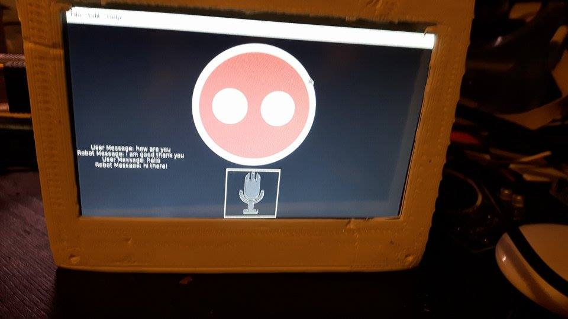

The system currently works out what sort of word each word is within the sentence. After Beta trials of V0.1.1, we found that allowing the user to add
command words and trigger words both confused, and wasted the time of the user. SHEP would need to pick out parts of sentences, and see what mattered.
Code was written to take lots of sentences, convert each word to it's word type (verbs, adverbs, nouns ect...) and calculate where they appear.
We used this data to write SHEP's vocabulary functions.
Next a subroutine which researched the internet for answers was developed. Last time, the Wikipedia page fell short of what we needed in terms of information.
The latest version researches using a browser, it finds key information and saves a link. The link is opened every time, so information is kept up to date.
We continue to work on hardware, making the voice recognition accurate and faster. We want to make it easier to add actions, and indeed get SHEP researching
how to write python code and saving it, from stack overflow. This means SHEP could write functions to control hardware, and give the user instructions on what to set up.
Below shows a basic browser version of the AI.
>Use the bottom of the console to type
This is the basic version of the AI. It checks your words matches what it knows in the data. Click button 2 to see the next stage, and have a go by typing where it says: >>>
Select a file to open from:
The system is able to read a main file and create files and create pathway links depending on what is in the input. The system is able to expand its knowledge through a series of text files with links to eachother.
The system has speech to text for its main input. By using serial communication, the AI can receive and send data to an Arduino, this Arduino has servos which can read
its own position so the user can record actions and play them on command. The data from the servos will store on a local SD card.
The AI has audio output text to speech on top to make it a full audio I/O system. The system has a graphical interface which allows you to interact.
The system has a data file organized alphabetically with every word in the English language, the user has added, and what they categorize as. This system runs on raspberry pi and desktop, although SHEP is set up on the Pi.

Above shows SHEP on a touch screen TFT. This is SHEP's head, the USB ports on the side are used to connect to an external sound card, a wireless internet dongle and an Arduino for serial output (actions)
We want SHEP's data files to expand in knowledge and social responses so SHEP can appear to be human and appear to be understanding.
SHEP is being developed further so it can reply based on the topic of conversation instead of just reading and writing what is in its data.
We want SHEP to further be able to apply logic to input and output by recording lgic in its data. This means SHEP could apply knowledge to different situations.
The SHEP AI projects is only being developed by one programmer at its current stage, This means that programming is taking longer than it could.
SHEPY is a 'dumbed down' version of SHEP. It does not have the same understanding of language as SHEP does but it simply learns through conversation. It is a
test for algorithms, and simple to modify using its source code provided.